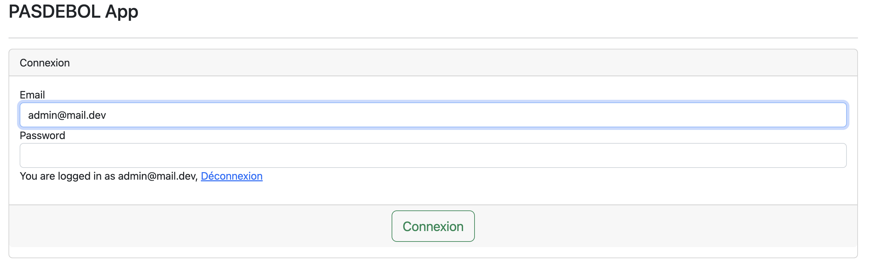
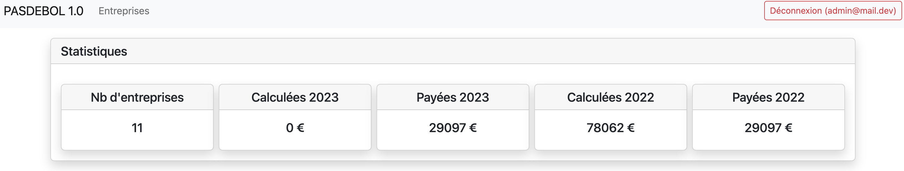

Nous avons effectué un audit de code d'un site cassé et pas du tout sécurisé qui était codé en Symfony PHP. Notre rôle était de repérer les erreurs métiers ainsi que les failles de sécurité. Nous avons donc pu appliquer les notions apprises lors de nos différents travaux pratiques. C'était une application conçue pour faciliter la déclaration et le paiement de taxe destinée à alléger les charges administratives des entreprises.
  Voir sur GitHub